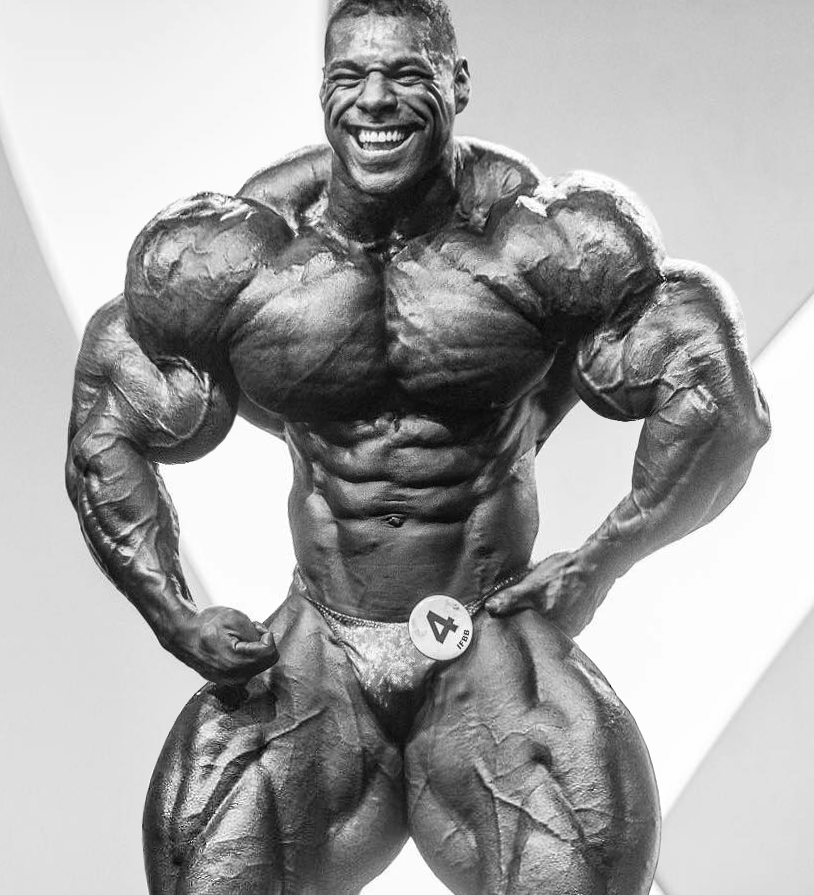

Introductory
Early Life
Athelete Statistics
Early Bodybuilding Career
Pro Bodybuilding Career
Early Life
De Asha was born in Liverpool, England in 1988. Here, he grew up in a poor neighborhood, where his family was constantly struggling financially. It would be these struggles that would eventually give him the drive to earn more money, and take care of his family. However, at the time, he was forced to live on welfare and was left with limited options for his future. Even though De Asha has found success boydbuilding, he actually started out playing soccer. He played on a semi-pro team for around a decade, where he was a really good player. He would then venture into the world of rowing. This was before he found his true passion for bodybuilding.
Liverpool, England in 1988. Here, he grew up in a poor neighborhood, where his family was constantly struggling financially. It would be these struggles that would eventually give him the drive to earn more money, and take care of his family. However, at the time, he was forced to live on welfare and was left with limited options for his future. Even though De Asha has found success boydbuilding, he actually started out playing soccer. He played on a semi-pro team for around a decade, where he was a really good player. He would then venture into the world of rowing. This was before he found his true passion for bodybuilding. Nathan De Asha
Don't be scared to LIFT HEAVY! ...
De Asha first turned to bodybuilding to gain muscle for soccer. Ironically enough, when he first attended a gym, he found himself “intimidated” by the large athletes. However, he found his way back, enjoying the feel of lifting free weights, along with gaining mass.De Asha first turned to bodybuilding to gain muscle for soccer. Ironically enough, when he first attended a gym, he found himself “intimidated” by the large athletes. However, he found his way back, enjoying the feel of lifting free weights, along with gaining mass. At this point, he would find himself immersed in materials about bodybuilding. He would read books like ones written by Joe Weirder. This is where he started to really develop a love for bodybuilding techniques. Subsequently, he started maintaining a stricter diet, which left him gaining 45lbs of muscle in just 15 months. Early Bodybuilding Career Initially, De Asha did not have an interest in pursuing a career in bodybuilding. He felt as if bodybuilding was not a sport,
At this point, he would find himself immersed in materials about bodybuilding. He would read books like ones written by Joe Weirder. This is where he started to really develop a love for bodybuilding techniques. Subsequently, he started maintaining a stricter diet, which left him